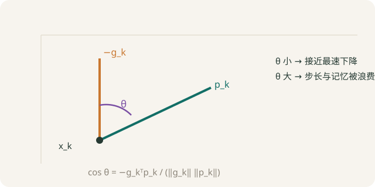

5.2.4 Fletcher–Reeves 方法的行为：下降角与停滞
FR 的 β 恒为非负，好处是永不主动放大方向，坏处是无法在方向变坏时把它丢弃。不精确线搜索下，FR 方向甚至可能不再是下降方向；即使下降，与负梯度的夹角也可能很小，使每步进展微薄。
方向可能不再下降
FR 的方向是 p_k=−g_k+β_k p_{k−1}，其中 β_k=‖g_k‖²/‖g_{k−1}‖²≥0。沿 p_k 的方向导数 g_kᵀp_k=−‖g_k‖²+β_k g_kᵀp_{k−1}。只有当 g_kᵀp_{k−1}=0（精确线搜索）时它才等于 −‖g_k‖²。若线搜索不精确，g_kᵀp_{k−1} 一般非零，第二项为正时方向导数就可能变号，p_k 成为上升方向。
下降角 θ
定义一个诊断量：p_k 与 −g_k 的夹角 θ_k，满足下式。θ_k 越小方向越接近最速下降；θ_k 越大，同样的步长带来的实际下降越小。
Zoutendijk 条件（3.2 节）只要求 Σ cos²θ_k ‖g_k‖² 收敛，对 cosθ_k 的下界不作要求；因此 FR 允许在个别迭代出现极小的 cosθ_k，甚至负值。

停滞的机制
当 β_k 接近 1，p_k≈p_{k−1}，连续两步几乎同向，搜索退化为沿同一直线的反复微调；若同时 ‖g_k‖ 变小而 ‖p_k‖ 不小，cosθ_k（精确情形下等于 ‖g_k‖/‖p_k‖）就很小。这种方向几乎与梯度正交的“贴谷运行”被称为停滞（jamming）。
窄谷中的 FR 轨迹：搜索方向几乎重复地指向谷底法向，迭代点只能小幅横移，进展缓慢。图示为机制示意，不是某次具体运行的数据。
玩具算例
取山谷型函数 f(x)=(x_1−1)²+5(x_2−x_1²)²，起点取经典 Rosenbrock 起点 (−1.2,1)，配合 Armijo 回溯线搜索。这是一个低维玩具：FR 用 52 步把 ‖g‖ 降到 1e-6 以下，但在第 10 步出现 cosθ=−0.05，方向已是上升方向 —— 正是不精确线搜索破坏下降性的实例。
这组数字只说明机制，不代表 FR 在一般问题上的步数或性能排序。程序用浮点回溯线搜索，不是精确线搜索，也不含重启。
变体与边界
缓解办法有三类：换用可取负值的系数（PR/PR+，5.2.2）以便丢弃坏方向；按 Powell 判据或定期重启（5.2.3）恢复下降；或改用满足强 Wolfe 条件的线搜索使 g_kᵀp_{k−1} 受控。FR 的优点是理论分析完整、每步廉价，缺点是缺乏这种自适应丢弃机制。
边界：本页算例只是一个二维玩具函数，不要据此断言 FR 比别的变体差或给出迭代次数，也不要当作基准；全局收敛条件见 5.2.5。
交互：线搜索不精确度对下降角的影响
在同一个山谷玩具上拖动滑块改变 Armijo 常数 c₁。c₁ 越大，接受步越保守，下降角可能更频繁地变差。该计算为教学示意。
实时模型计算
Python：下降角的浮点断言
下面的程序只依赖标准库，在山谷玩具上运行 FR 并记录每步下降角，断言最终 ‖g‖<1e-6 且至少一步的 cosθ<0。
"""Fletcher-Reeves on a Rosenbrock-like valley with Armijo backtracking."""
import math
def f(p):
return (p[0]-1)**2 + 5*(p[1]-p[0]**2)**2
def grad(p):
x, y = p
return [2*(x-1) - 20*x*(y-x*x), 10*(y-x*x)]
def run(x0, tol=1e-6, cap=500):
x, g = list(x0), grad(x0)
p = [-g[0], -g[1]]
angles = []
for _ in range(cap):
if math.hypot(*g) < tol:
break
slope = g[0]*p[0] + g[1]*p[1]
a = 1.0
for _ in range(40):
if f([x[0]+a*p[0], x[1]+a*p[1]]) <= f(x) + 1e-4*a*slope:
break
a *= 0.5
x = [x[0]+a*p[0], x[1]+a*p[1]]
gn = grad(x)
beta = (gn[0]**2 + gn[1]**2) / (g[0]**2 + g[1]**2)
p = [-gn[0] + beta*p[0], -gn[1] + beta*p[1]]
cos = -(gn[0]*p[0] + gn[1]*p[1]) / (math.hypot(*gn)*math.hypot(*p))
angles.append(cos)
g = gn
return x, math.hypot(*g), angles
if __name__ == "__main__":
x, norm, angles = run((-1.2, 1.0))
assert norm < 1e-6
assert min(angles) < 0.0
print("final", [round(v, 6) for v in x],
"| min descent angle cos =", round(min(angles), 6),
"| steps =", len(angles))